Провёл исследование на 103 респондентах и оживил раздел «Лимиты» в зелёном банке
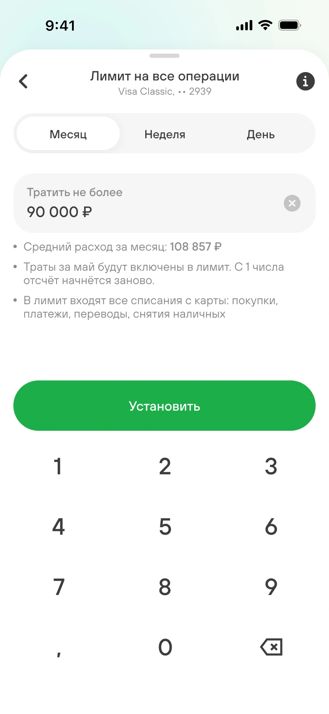
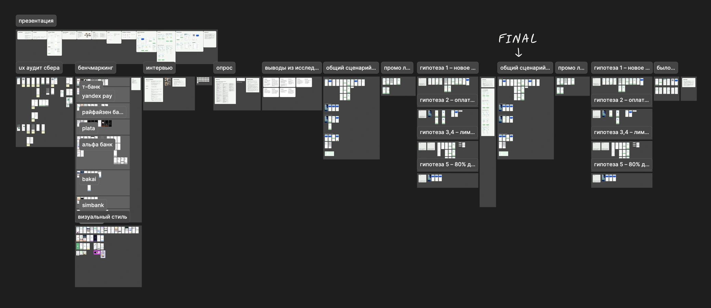
Проблема
Пользователи Сбера хотят контролировать траты, но настройку лимита сложно найти, нельзя установить лимит на день или неделю, а после временного снятия лимита пользователь не возвращает его обратно
Задача
Проанализировать сценарий «изменение лимитов по карте» для Сбера и предложить решения, которые закроют потребности пользователей и принесут пользу бизнесу
Выгода бизнесу
Удобные лимиты увеличивают частоту открытий приложения и глубину использования продукта.
Повышается лояльность к банку, открывается возможность для продвижения других продуктов: накопительные счёта и инвестиции
Выгода пользователю
Удобные лимиты формируют финансовую привычку: пользователь видит, сколько осталось до конца лимита, реже совершает импульсивные покупки и лучше планирует бюджет. Со временем это напрямую влияет на финансовое благополучие.
Процесс
- UX аудит Сбера
- Бенчмаркинг
- Интервью
- Branstorm
- Опрос
- Гипотезы и приоритеты
- Проектирование
- Ю-тест
- Правки
Сначала ресёч потом гипотезы!
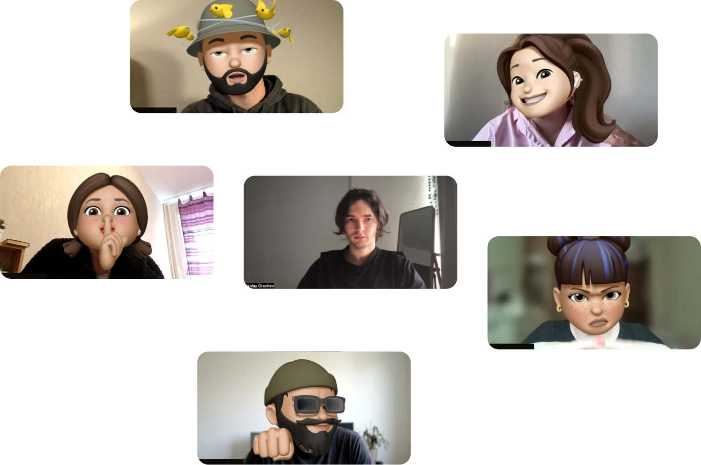
гайды для ресёча, скрины, подробные выводы
Решение 1
Начнём с промо → Делаем баннер на главной странице, а в сценарий успешной оплаты добавим чуть-чуть эмоций. Делаем акцент на накоплении, а не на лимитах и ограничениях.
Аргументы
- 19% не использующих лимит в открытом вопросе назвали накопление на цель как повод, который мог бы заставить их попробовать лимит
- 57 из 103 респондентов лимитами не пользуются вообще и в раздел лимитов не заходят, но можно дотянуться до них на главном экране и в сценарии успешной оплаты, там и размещаем баннеры
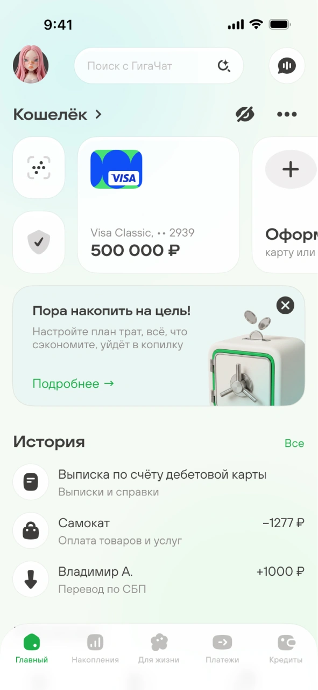
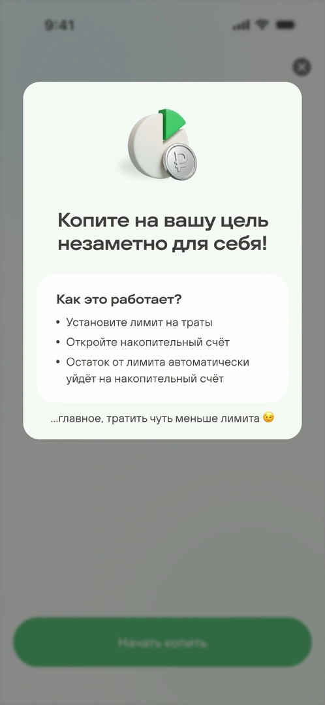
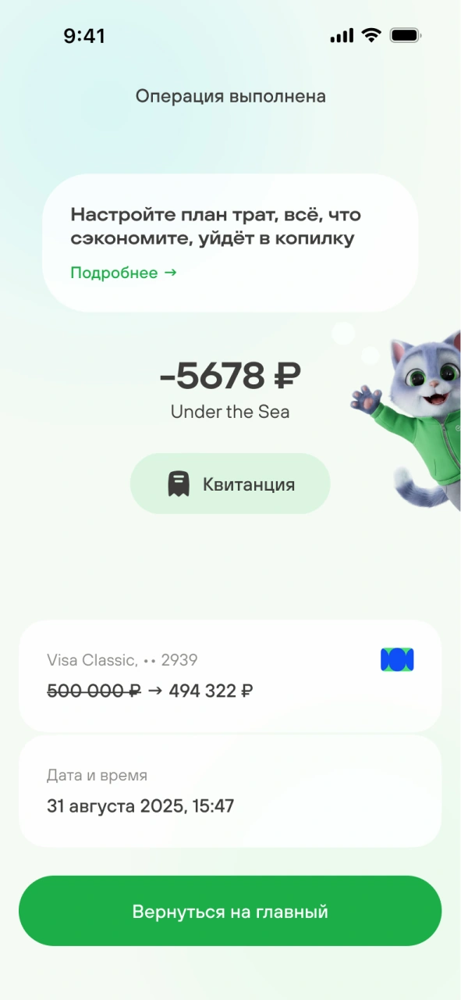
Решение 2
Если дать пользователям возможность автоматически откладывать неистраченный остаток от лимита на накопительный счёт, то у пользователей фичи вырастет LTV, т.к. появится дополнительная ценность (не только сохранять деньги, но и откладывать их на цель)
Аргументы
- На вопрос «Что бы вы добавили в настройки лимитов?» (мультивыбор) 74% пользователей лимитов — 34 из 46 — отметили вариант «Если потратилось меньше лимита, отправлять остаток на отдельный счёт/в копилку».
- Фича с автонакоплением открывает возможность привлечь новых пользователей к лимитам. 19% (11 из 57 человек) не использующих лимит в открытом вопросе назвали накопление на цель как повод, который мог бы заставить их попробовать лимит.
- Рост баланса на накопительном счёте сам по себе является стимулом пользоваться лимитом и снижает вероятность отказа от фичи
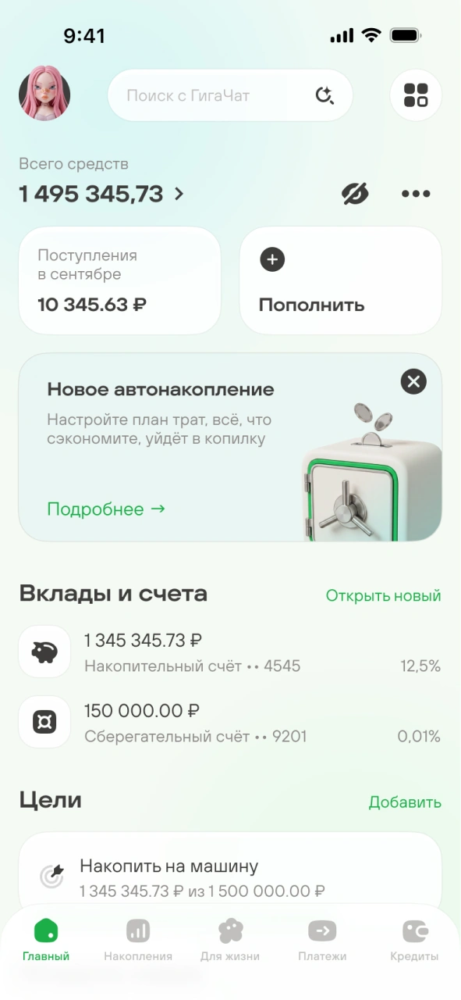
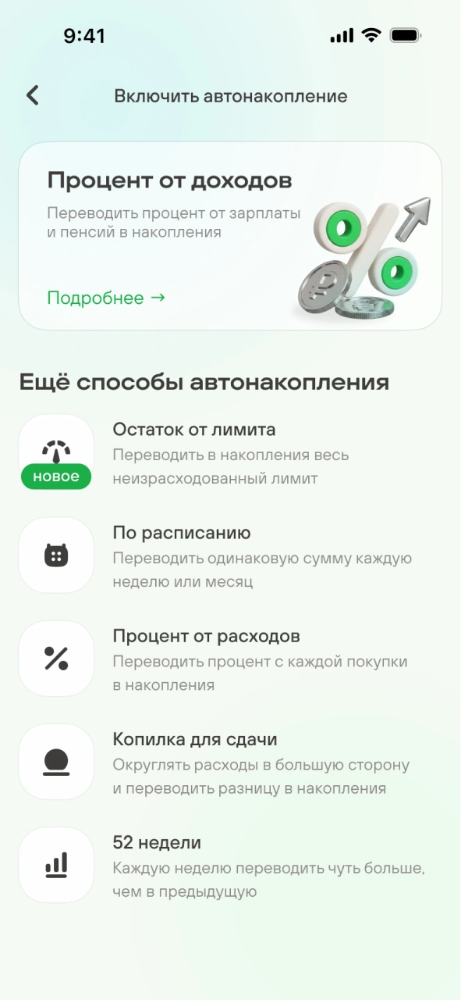
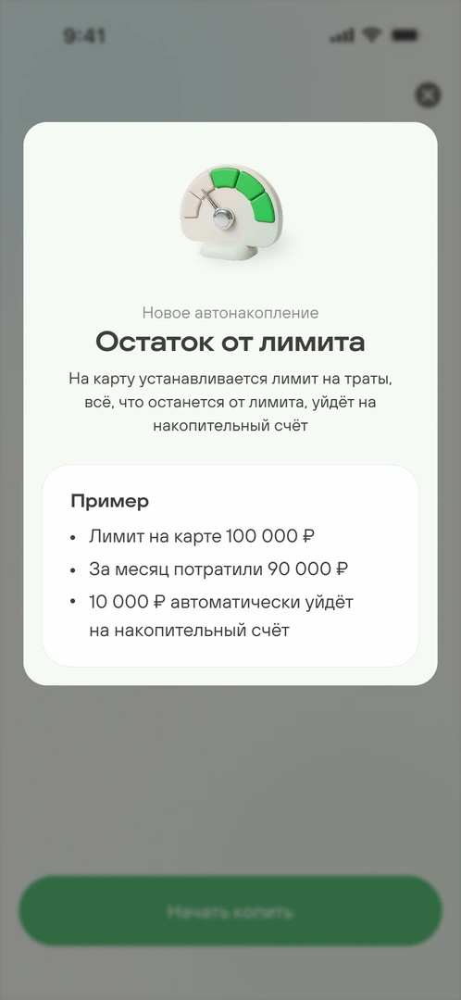
Решение 3
Если при оплате сверх лимита спросить подтверждение, то пользователи перестанут выключать лимит → У лимитов снизится отток пользователей
Аргументы
- 76% пользователей лимитов (35 из 46) снимали лимит ради крупной покупки. 18 из 35 человек забыли поставить его обратно.
- При достижении лимита 46% пользователей лимитов (21 из 46) предпочли бы мягкий лимит — предупреждение и возможность оплаты сверх лимита
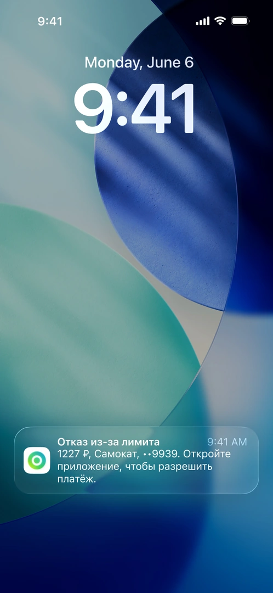
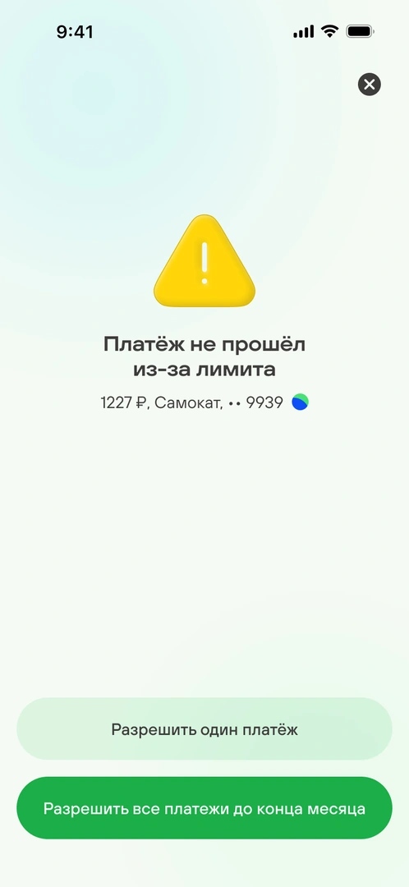
Решение 4
Если добавить возможность настраивать лимит на неделю и день, то у пользователей, которым это важно, будет меньше повода уйти к конкурентам, у которых есть лимиты на день/неделю.
Аргументы
- «На вопрос «Что бы вы добавили в настройки лимитов?» (мультивыбор) 20% пользователей лимитов — 9 из 46 — отметили вариант «Лимит на неделю» или «Лимит на день»»
- Настройка лимита на неделю или день есть почти у всех конкурентов
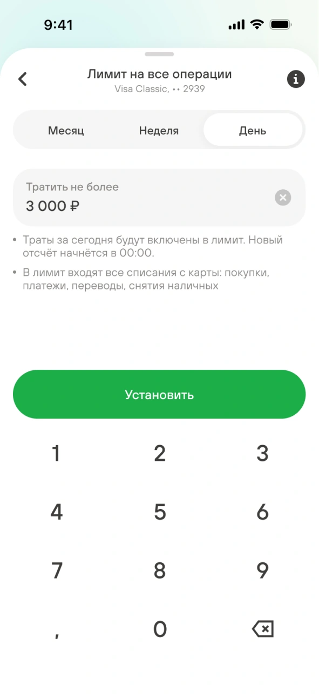
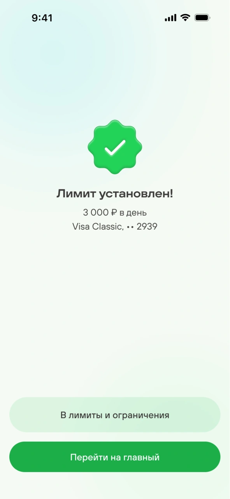
Решение 5
Если при настройке лимита за месяц показывать среднюю сумму трат, то пользователю будет проще настраивать лимит, а значит уменьшится трение и повысится CR в завершение настройки
Аргументы
- В интервью 2 из 5 пользователей пожаловались, что хотят видеть подсказку по сумме средних трат при настройке
- Подсказка не усложняет интерфейс и не требует дополнительного шага, это просто одна строка под полем ввода
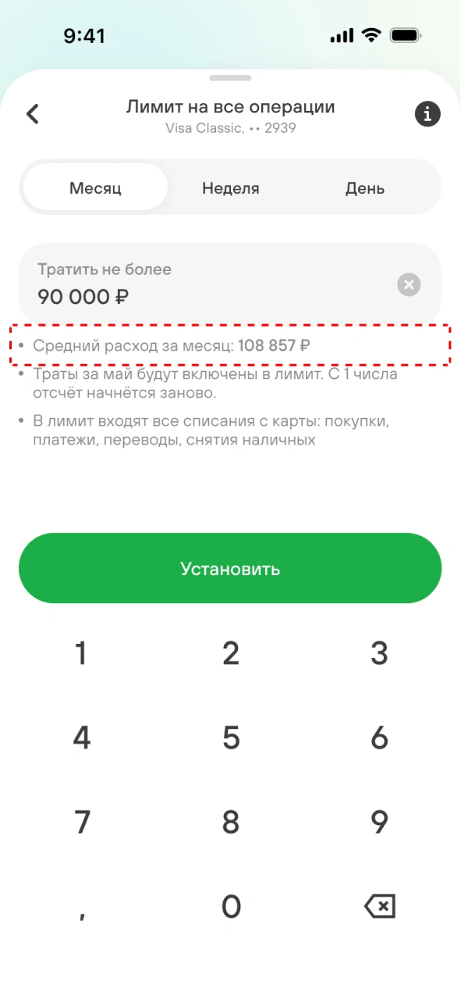
Решение 6
Если при приближении к лимиту (например, 80% от суммы) отправлять пуш, пользователи реже будут упираться в лимит внезапно и реже отключать его из-за неудобства.
Аргументы
- На вопрос «Что бы вы добавили в настройки лимитов?» (мультивыбор) 35% пользователей лимитов — 16 из 46 — отметили вариант «Уведомления при приближении к лимиту»
- Уведомление в моменте приближения к лимиту снимает эффект внезапности, пользователь сможет заранее скорректировать траты
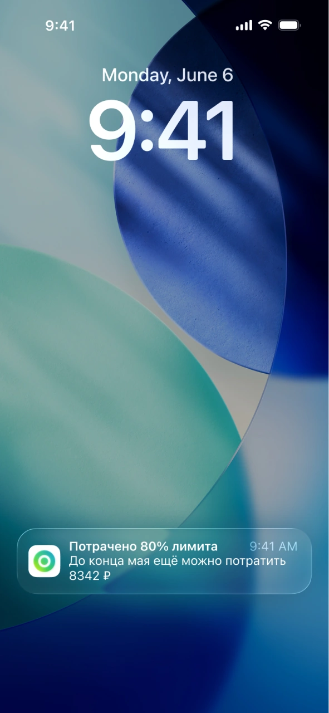
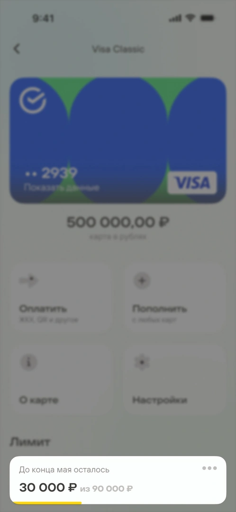
Новый дизайн
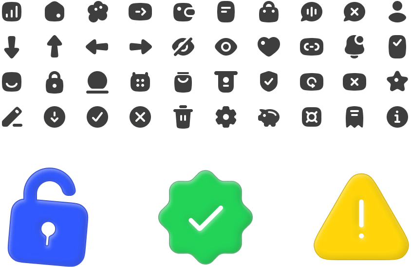
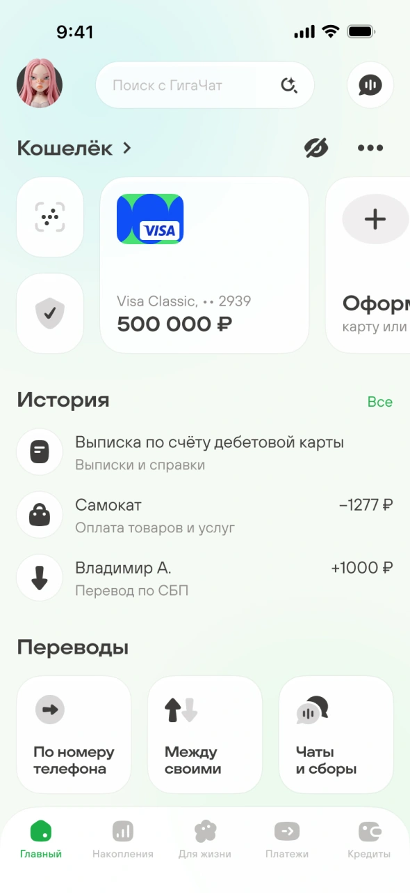
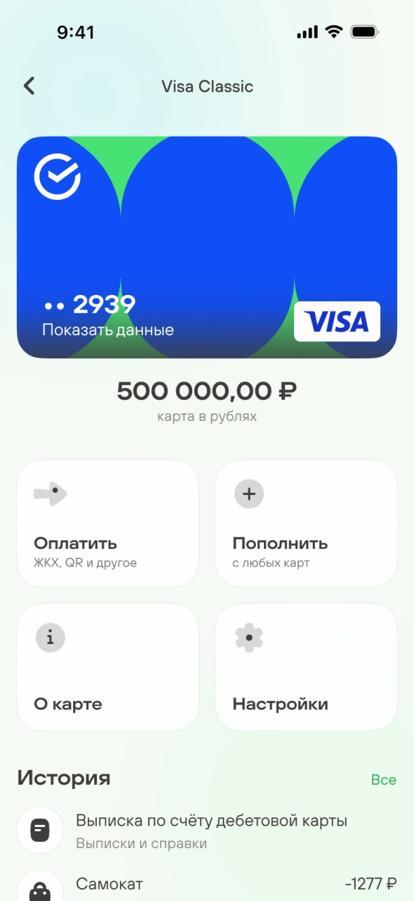
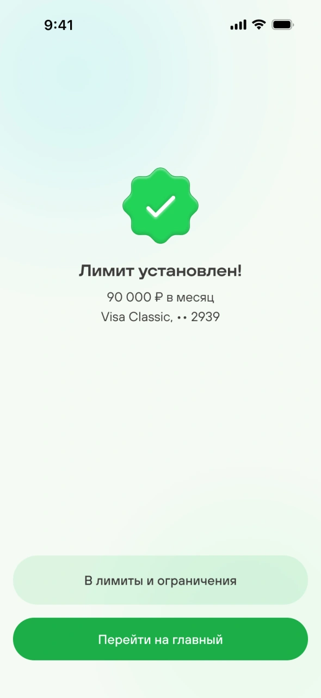
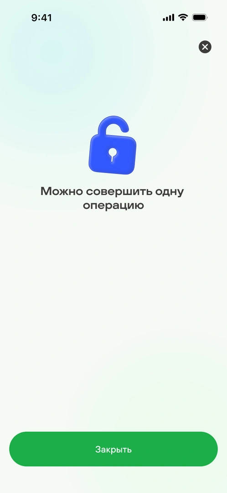
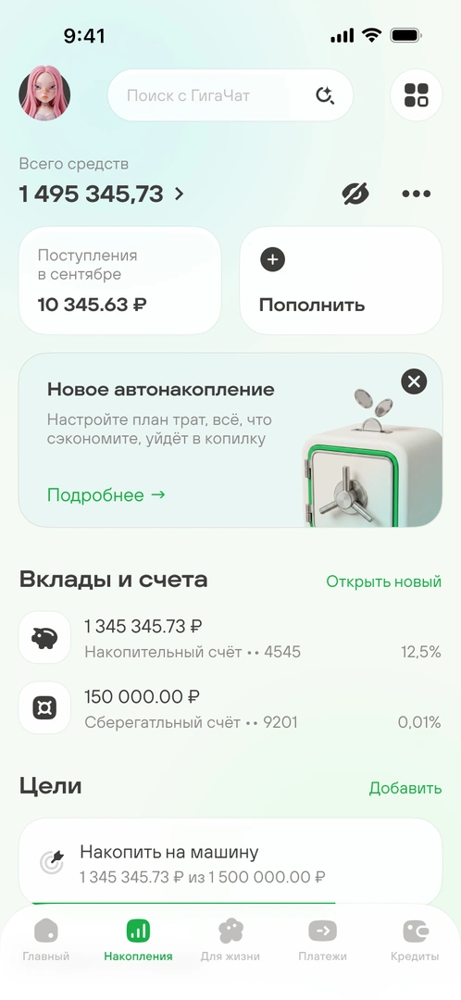
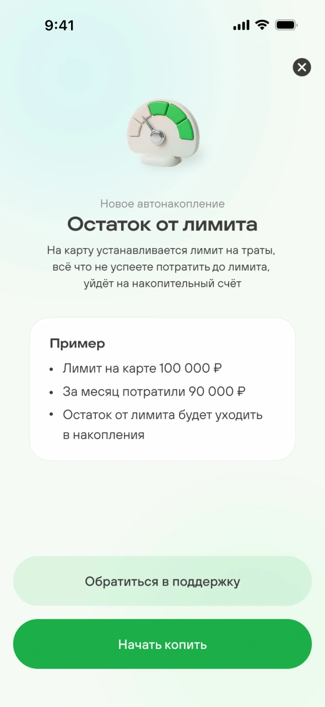
Результат
Сделал исследование
Провёл 5 интервью и опрос среди 103 человек. Выяснил, что лимиты не популярны, но часть незаинтересованной аудитории всё же можно вовлечь, если позиционировать лимит как способ накопить на цель.
Разработал дизайн новой фичи
Спроектировал макеты для фичи, которая набрала наибольший отклик среди пользователей лимитов (34 человека из 46), а именно: всё, что удалось сэкономить благодаря лимиту, будет уходить на сберегательный счёт.
Снизил вероятность отвала
Переработал сценарий превышения лимита. Раньше для этого приходилось снимать лимит целиком — и 39% опрошенныхп потом забывали включить его обратно. Теперь лимит можно оставить включённым, а платёж сверх него провести через дополнительное подтверждение → пользователи не будут лишний раз снимать лимит
Поработал с визуалом
Предложил несколько лёгких промо-решений для привлечения внимания к лимитам и сделал глоу-ап интерфейса ⋆｡°✩